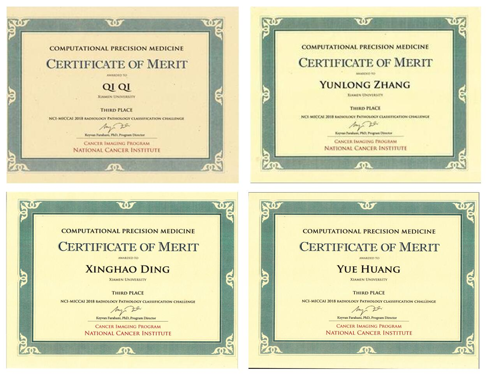
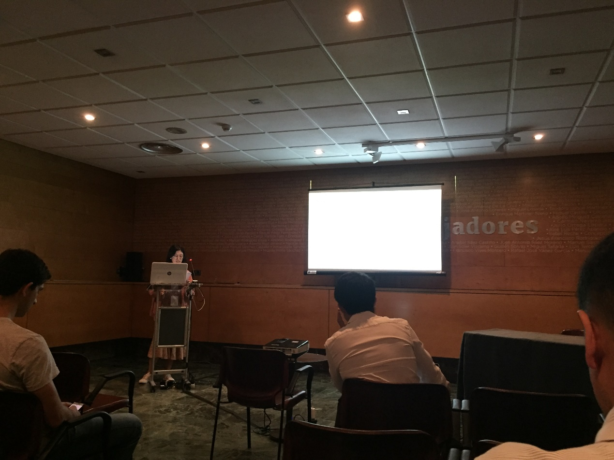

在日前西班牙格拉纳达举办的MICCAI2018国际学术会议中，来自厦门大学信息科学与技术学院通信工程系丁兴号教授课题组的XMUSmartDSP团队在MICCAI卫星赛事COMPUTATIONAL PRECISION MEDICINE(CPM)中取得了第三名的优异成绩。

CPM竞赛由医学影像分析顶级会议MICCAI所举办，该竞赛目的在于结合病理学图像和核磁共振图像的信息，将低级别神经胶质瘤病例分为两种亚型：少突胶质细胞瘤和星形细胞瘤。
此次竞赛共吸引224支队伍报名，其中包括斯坦福大学、印度理工学院等知名高校。比赛分为训练、测试与答辩环节，经过两个月的努力，最终厦门大学SmartDSP团队顺利入围该项比赛前三名。
厦门大学SmartDSP实验室是一所专注于研究机器学习、模式识别、智能数据处理以及医学医疗影像处理与分析的团队。SmartDSP参赛队由丁兴号教授带队，黄悦副教授和蔡聪波副教授提供指导，主要队员为硕士研究生齐琦和硕士研究生章云龙，齐琦主要负责病理学图像部分的分类，章云龙主要负责放射性图像部分的分类，并由齐琦代表团队在会场做汇报答辩。

SmartDSP团队提出了一种基于深度学习的脑肿瘤分类系统。通过对预先训练的数据进行单独的分割和分类，最后通过全连接层将两个数据的决策层相结合。对于病理图像，系统采用主动学习帮助挑选分割样本，减少人为标注量。对于放射性图像，首先对mri图像进行头骨分离，对mri图像进行分割之后采用wnd-charm分类器提取特征进行分类。